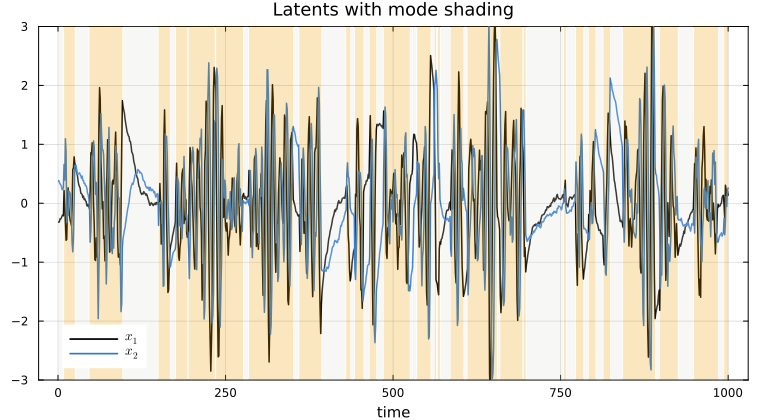
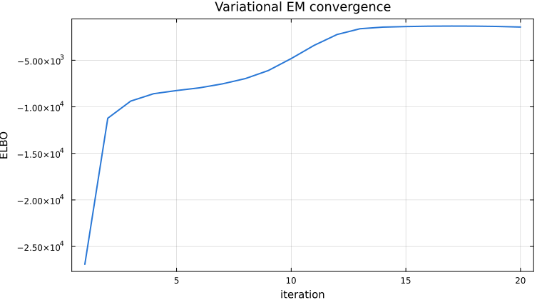

Switching LDS
A Switching Linear Dynamical System (SLDS) puts a discrete Markov chain on top of an LDS: the continuous state follows mode-specific linear dynamics and an HMM governs how the mode switches over time. This tutorial fits a 2-mode SLDS where each mode is a 2-D oscillator.
using StateSpaceDynamics
using LinearAlgebra
using Random
using Plots
using LaTeXStrings
using Statistics
using StableRNGs
rng = StableRNG(1234);Model
Discrete mode $z_t \in \{1, \dots, K\}$ has Markov transitions $A_{z_{t-1}, z_t}$. Conditioned on the mode, the continuous state and observations follow an LDS with mode-specific parameters $(F_{z_t}, b_{z_t}, Q_{z_t}, C_{z_t}, d_{z_t}, R_{z_t})$, where $F_k$ is the dynamics matrix of mode $k$ (A is reserved for the discrete transition matrix, matching the SLDS model page). Mode 1 here is a slow oscillator, mode 2 is a fast one.
state_dim = 2
obs_dim = 10
K = 2
A_hmm = [0.92 0.08;
0.06 0.94]
πₖ = [1.0, 0.0]
F₁ = 0.95 * [cos(0.05) -sin(0.05); sin(0.05) cos(0.05)]
F₂ = 0.95 * [cos(0.55) -sin(0.55); sin(0.55) cos(0.55)]
Q₁ = [0.001 0.0; 0.0 0.001]
Q₂ = [0.1 0.0; 0.0 0.1]
x0 = zeros(state_dim)
P0 = Matrix(0.1 * I(state_dim))
b = zeros(state_dim)
C₁ = randn(rng, obs_dim, state_dim)
C₂ = randn(rng, obs_dim, state_dim)
R = Matrix(0.1 * I(obs_dim))
d = zeros(obs_dim)
lds1 = LinearDynamicalSystem(
GaussianStateModel(F₁, Q₁, b, x0, P0),
GaussianObservationModel(C₁, R, d),
)
lds2 = LinearDynamicalSystem(
GaussianStateModel(F₂, Q₂, b, x0, P0),
GaussianObservationModel(C₂, R, d),
)
model = SLDS(; A=A_hmm, πₖ=πₖ, LDSs=[lds1, lds2]);Simulation
rand on an SLDS returns the discrete mode sequence, the continuous latent trajectory, and the observations.
T = 1000
z, x, y = rand(rng, model, T);Mode-shaded latent plot — bands show which mode was active when.
p_modes = let
p = plot(1:T, x[1, :]; label=L"x_1", linewidth=1.5, color=:black)
plot!(p, 1:T, x[2, :]; label=L"x_2", linewidth=1.5, color="#2a78d6")
transition_points = [1; findall(diff(z) .!= 0) .+ 1; T + 1]
for i in 1:(length(transition_points) - 1)
a, b = transition_points[i], transition_points[i + 1] - 1
col = z[a] == 1 ? "#e1e0d9" : "#eda100"
vspan!(p, [a, b]; fillalpha=0.25, color=col, label="")
end
plot!(p; title="Latents with mode shading", xlabel="time", ylims=(-3, 3))
end
Learning
fit! runs variational Laplace-EM: an HMM forward-backward pass computes mode responsibilities while a Laplace approximation handles the continuous states inside each mode.
A_init = [0.9 0.1; 0.1 0.9]
A_init ./= sum(A_init; dims=2)
πₖ_init = rand(rng, K); πₖ_init ./= sum(πₖ_init)
Random.seed!(rng, 456)
lds_init1 = LinearDynamicalSystem(
GaussianStateModel(
randn(rng, state_dim, state_dim) * 0.5,
Matrix(0.1 * I(state_dim)),
zeros(state_dim), zeros(state_dim),
Matrix(0.1 * I(state_dim)),
),
GaussianObservationModel(
randn(rng, obs_dim, state_dim),
Matrix(0.1 * I(obs_dim)),
zeros(obs_dim),
),
)
lds_init2 = LinearDynamicalSystem(
GaussianStateModel(
randn(rng, state_dim, state_dim) * 0.5,
Matrix(0.1 * I(state_dim)),
zeros(state_dim), zeros(state_dim),
Matrix(0.1 * I(state_dim)),
),
GaussianObservationModel(
randn(rng, obs_dim, state_dim),
Matrix(0.1 * I(obs_dim)),
zeros(obs_dim),
),
)
learned_model = SLDS(; A=A_init, πₖ=πₖ_init, LDSs=[lds_init1, lds_init2])
elbos = fit!(learned_model, y; max_iter=20, progress=true);
p_elbo = plot(elbos; xlabel="iteration", ylabel="ELBO",
title="Variational EM convergence", lw=2, legend=false, color="#2a78d6")
Decoding the mode sequence
After fitting, one more E-step gives us both the smoothed continuous states and the per-timestep mode posterior $\gamma_{k,t} = P(z_t = k \mid y_{1:T})$.
This section reaches into non-exported internals (initialize_FilterSmooth, SLDSDiscreteLayer, estep!, and friends) because the package does not yet expose a public posterior-decoding API for SLDS. These names may change between releases. The obs_inputs/latent_inputs values below are HiddenMarkovModels.jl plumbing: the "observation" fed to the discrete layer is just the timestep index used to look up pre-computed log-likelihoods, and there are no control inputs.
ld = learned_model.LDSs[1]
seq_ends = [T]
obs_inputs = collect(1:T)
latent_inputs = fill(nothing, T)
tfs = StateSpaceDynamics.initialize_FilterSmooth(ld, [T])
dl = StateSpaceDynamics.SLDSDiscreteLayer(
learned_model.A, learned_model.πₖ, zeros(Float64, K, T),
)
fb_storage = StateSpaceDynamics._make_slds_fb_storage(dl, seq_ends)
slds_ws = StateSpaceDynamics.SLDSSmoothWorkspace(Float64, learned_model, T)
w_uniform = fill(1.0 / K, K, T)
StateSpaceDynamics.smooth!(learned_model, tfs[1], y, w_uniform; ws=slds_ws)
x_samples = [Matrix{Float64}(undef, ld.latent_dim, T)]
randn_buf = Vector{Float64}(undef, ld.latent_dim)
StateSpaceDynamics.sample_posterior!(x_samples, rng, tfs, randn_buf)
StateSpaceDynamics.estep!(
learned_model, tfs, fb_storage, dl, [y], x_samples, slds_ws;
obs_inputs=obs_inputs, latent_inputs=latent_inputs, seq_ends=seq_ends,
)
x_learned = tfs[1].x_smooth
responsibilities = fb_storage.γ
z_decoded = [argmax(responsibilities[:, t]) for t in 1:T];Modes are identifiable only up to a permutation of the labels. Pick the assignment that matches the truth best.
function align_labels_2way(z_true, z_pred)
acc_direct = mean(z_true .== z_pred)
z_flipped = 3 .- z_pred
acc_flipped = mean(z_true .== z_flipped)
return acc_flipped > acc_direct ? (z_flipped, acc_flipped) : (z_pred, acc_direct)
end
z_aligned, accuracy = align_labels_2way(z, z_decoded)
println("Mode decoding accuracy: $(round(accuracy * 100; digits=1))%")Mode decoding accuracy: 92.8%This page was generated using Literate.jl.